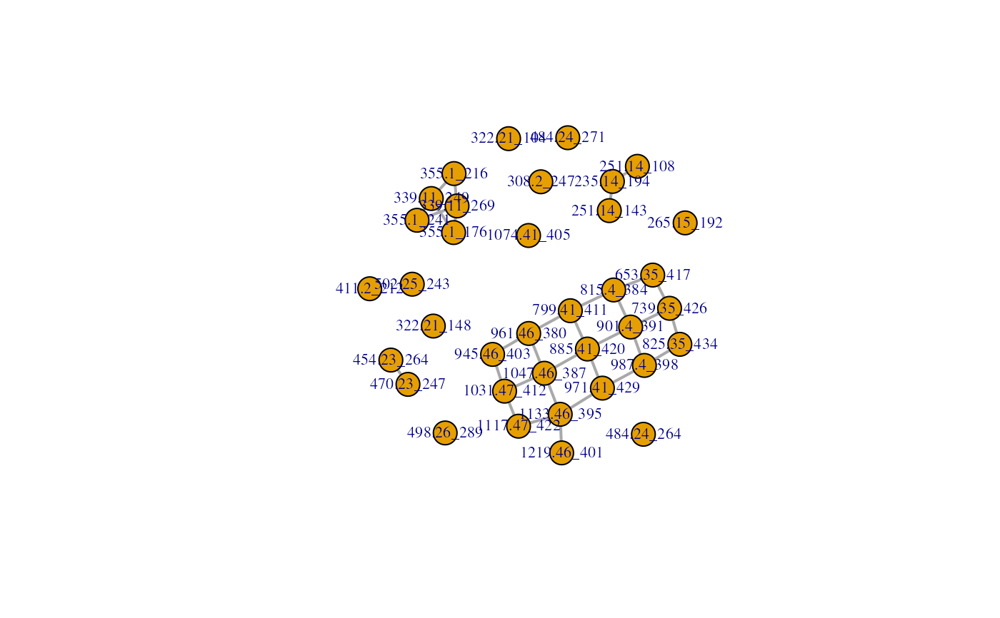
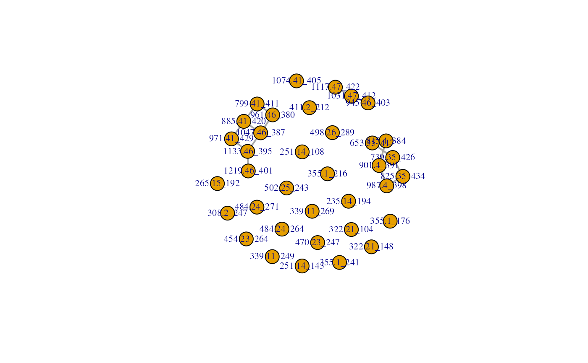

rtCorrection.RdThe function `rtCorrection` corrects the adjacency matrix infered from structural data based on shifts in the retention time. For known chemical modifications (e.g. addition of glycosyl groups) molecules with the moiety should elute at a different time (in the case of glycosyl groups the metabolite should elute earlier in a reverse-phase liquid chromatography system). If the connection for the metabolite does not fit the expected behaviour, the connection will be removed (otherwise sustained).
rtCorrection(am, x, transformation, var = "group")`AdjacencyMatrix` object returned by the function `structural`. The object contains the assays `"binary"` and additional assays with `character` matrices (only the `"binary"` assay is required). The assay `"binary"` stores the `numeric` matrix with edges inferred by mass differences.
`matrix`, where columns are the samples and the rows are features (metabolites), cell entries are intensity values, `x` contains the columns "`mz`" and `"rt"` that has the m/z and rt information (numerical values) for the correction of retention time shifts between features that have a putative connection assigned based on m/z value difference.
`data.frame`, containing the columns `var`, and `"rt"` that will be used for correction of transformation of (functional) groups based on retention time shifts derived from `x`
`character(1)`, the key that is used for matching between the column `var` in `transformation` and the assay `var` in `am`
`AdjacencyMatrix` containing the slots `binary` and additional `character` adjacency matrices. The slot `directed` is inherited from `am`.
The assay `binary` stores the `numeric` `matrix` with edges inferred mass differences corrected by retention time shifts.
`rtCorrection` is used to correct the (unweighted) adjacency matrices returned by `structural` when information is available about the retention time and shifts when certain transformation occur (it is meant to filter out connections that were created by m/z differences that have by chance the same m/z difference but different/unexpected retention time behaviour).
`rtCorrection` accesses the assay `transformation` of `am` and matches the elements in the `var` column against the character matrix. In case of matches, `rtCorrection` accesses the `"mz"` and `"rt"` columns of `x` and calculates the retention time difference between the features. `rtCorrection` then checks if the observed retention time difference matches the expected behaviour (indicated by `"+"` for a higher retention time of the feature with the putative group, `"-"` for a lower retention time of the feature with the putative group or `"?"` when there is no information available or features with that group should not be checked).
In case several transformation were assigned to a feature/feature pair, the connection will be removed if there is an inconsistency with any of the given transformations.
data("x_test", package = "MetNet")
rownames(x_test) <- paste(round(x_test[, "mz"], 2),
round(x_test[, "rt"]), sep = "_")
transformation <- rbind(
c("Hydroxylation (-H)", "O", 15.9949146221, "+"),
c("Malonyl group (-H2O)", "C3H2O3", 86.0003939305, "+"),
c("Monosaccharide (-H2O)", "C6H10O5", "162.0528234315", "-"),
c("Disaccharide (-H2O)", "C12H20O11", "340.1005614851", "-"),
c("Trisaccharide (-H2O)", "C18H30O15", "486.1584702945", "-"))
transformation <- data.frame(group = transformation[, 1],
formula = transformation[, 2],
mass = as.numeric(transformation[, 3]),
rt = transformation[, 4])
am_struct <- structural(x = x_test, transformation = transformation,
var = c("group", "mass"), ppm = 10, directed = FALSE)
am_struct_rt <- rtCorrection(am = am_struct, x = x_test,
transformation = transformation)
## visualize the adjacency matrices
library(igraph)
#>
#> Attaching package: ‘igraph’
#> The following object is masked from ‘package:GenomicRanges’:
#>
#> union
#> The following object is masked from ‘package:IRanges’:
#>
#> union
#> The following object is masked from ‘package:S4Vectors’:
#>
#> union
#> The following objects are masked from ‘package:BiocGenerics’:
#>
#> normalize, path, union
#> The following objects are masked from ‘package:stats’:
#>
#> decompose, spectrum
#> The following object is masked from ‘package:base’:
#>
#> union
g <- graph_from_adjacency_matrix(assay(am_struct, "binary"),
mode = "undirected")
g_rt <- graph_from_adjacency_matrix(assay(am_struct_rt, "binary"),
mode = "undirected")
plot(g, edge.width = 2, edge.arrow.size = 0.5, vertex.label.cex = 0.7)

plot(g_rt, edge.width = 2, edge.arrow.size = 0.5, vertex.label.cex = 0.7)
